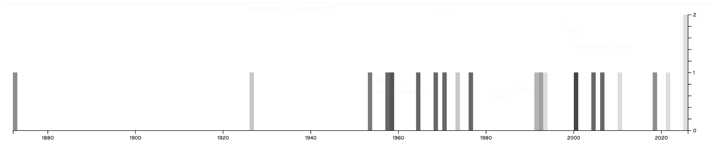
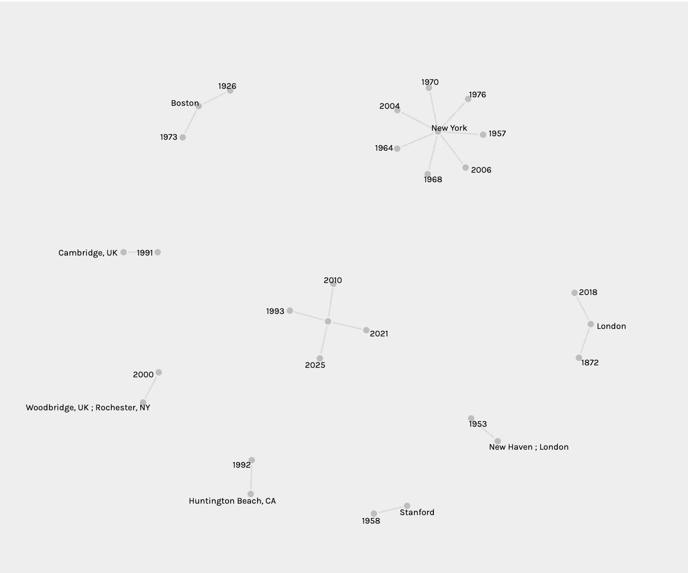
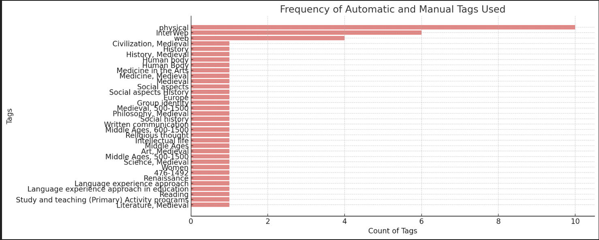

What drew me to this topic is my interest in the Reniassance faire and middle ages in general!

This timeline shows that New York is depicted in the 1960s alot in dark grey and london has the oldest contribution the oldest 
The areas these were published from and when!

The tags used and tally of physical vs web books and such